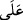
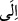

Bahru’l-ulûm’da ise şöyle denilir: Cenab-ı Hak sırf fazl u kereminin, kulların
adakları gibi vâcib hâle geldiğini göstermek için zorunluluk ifâde eden bir lâfız
kullanmıştır.
Bir âlim de şöyle der: “Ehl-i sünnet ve’l-cemâat’e göre, Allah’a hiçbir şey zorunlu
olmadığı halde âyette zorunluluk bildiren bir lâfzın kullanılması, geçmişte bir vaad
yapıldığını göz önünde bulundurmak, bu vaadin bütün canlılara ulaşacağının kesin
olduğunu göstermek, rızık elde edeceğim diye kendini yiyip bitirmekten vazgeçmeye
yöneltmek gayelerine mâtûftur.”
Allah’ın tüm canlıların rızkını yaptığı vaade göre fazl u kerem olarak vermesi,
vaadinden dönmemek konusunda bütün rızıkları mecburen veren birine benzetilerek bu
şekilde ifâde edilmiştir.
Âyetteki “__WORD__” harfinin “__WORD__” mânâsına olduğu söylenmiştir. Buna göre ‘Rızkın
tamamı Allah’tandır’ demektir. Ya da “__WORD__” mânâsınadır. Buna göre ‘Rızık Allah
Teâlâ’ya âittir, isterse genişletir, dilerse daraltır.’ demektir.
“Allah onun durduğu ve emânet bırakıldığı yeri bilir.” Bu ifade birkaç şekilde
anlaşılabilir:
Birincisi: İbn Abbas (r. anhümâ)’dan rivayet edilen şu görüştür: “Canlıların durduğu
yer, ya gece-gündüz sığındığı ya da sükûnet bulup oturduğu mekandır. Emanet
bırakıldığı yer ise kendi ihtiyarı olmaksızın öldüğünde, emanet bir şey gibi defnedildiği
yerdir.”
Abdullah b. Abbas (r.a.) der ki: “Kişinin defnedileceği yer nerede olacaksa ihtiyacı
kendisini oraya sürükleyip götürür. Öyle ki işi biter bitmez ruhu orada kabzedilir. O
toprak kıyamet günü şöyle diyecektir: “Bu canlı, bana emanet bıraktığın varlıktır.”
İkincisi: Canlıların durduğu yer, babalarının sulbünde karar kıldıkları yer, emanet
bırakıldıkları yer ise rahimlerdeki veya rahme benzer yumurta ve benzerlerindeki
yerleridir. Rahimlerin “emanet bırakılan yer” diye adlandırılması, nutfenin rahimlere
başka biri tarafından bırakılmış olmasından kaynaklanmaktadır. Nutfenin babaların
sulbünde bulunuşu ise bunun aksinedir. Çünkü orada tabîî olarak oluşur.
Üçüncüsü: “Canlıların durduğu yer, bilfiil var olduklarında bulunduğu yerdir. Emanet
bırakıldıkları yer ise bilfiil var olmadan önce bırakıldıkları sulb, rahim ve yumurtadır.
Canlıların son durumlarının (bilfiil var olma) önce zikredilmesi, herhalde onlara
yeryüzünde hareket eden varlıklar “dâbbe” adının verilmesi ile arasındaki münasebete
riâyet etmek içindir.
Dördüncüsü: Canlıların durduğu yer, yoklukta bulundukları yerdir. Allah, her canlıyı
kendisine mahsus suretini kabul etmeye müsait olarak nasıl yaratacağını bilir. Emanet
bırakıldıkları yer ise canlıların bu suretlerinin olgunlaşması sırasında dönüp dolaşıp
aldığı son durumlarıdır.
Allah Teâlâ, özellikle insan ruhunun ruhlar âlemindeki yerini de bilir. Çünkü insanlar
dört saf halindedir. Birinci safta peygamberler ile seçkin velilerin ruhları, ikinci safta